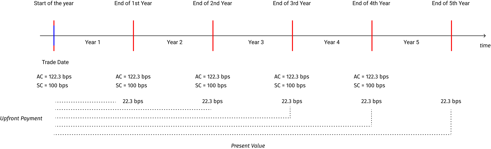

Pricing of a Single Name CDS
The pricing of a CDS is slightly different and difficult compared to pricing of other derivatives. In general, the concept of pricing a CDS is the same as with any other derivative - the present value of the expected payouts (premiums) should be equal to the present value of the expected payins (CDS settlement amount) at the time of inception of the trade (trade date) - but the mechanics is different. Therefore, before we start with an example to price a CDS, let's discuss some of the key inputs required for pricing.
Some inputs
The following are some of the inputs:Default Probability
It refers to the probability that a CDS reference entity would default during a particular period of time. The maximum probability is 1 and the minimum is 0. In general, the default probability lies between these two extreme values. If we know the survival probability, the default probability is 1 minus survival probability.
Survival Probability
It refers to the probability that a CDS reference entity would not default during a particular period of time. The maximum probability is 1 and the minimum is 0. In general, the survival probability lies between these two extreme values. If we know the default probability, then the survival probability is 1 minus default probability.
Default and Survival Probability Calculation
If we know the default probability for a particular year, we would be able to compute the default probability of the subsequent years, conditional that no earlier default has occurred. In other words, if in year 1 we estimate that the probability of default is 2% and that no earlier default has occurred, then we would be able to compute the default probability for year 2, with the assumption or condition that no default has occurred in year 1. Similarly, if no default has occurred in year 1 and 2, we would be able to compute the default probability for year 3, based on default probability of previous year.
Let's denote default as 'p' and survival as 's'.
On the trade date:
p = 0 (as no default has occurred now)
s = 1-p = 1 (as surival probability = 1 minus default probability)
For 1st period
p = probability of default (we need to estimate this)
s = 1-p
For 2nd period and subsequent periods
p = p of previous period x s of previous period (default probability of previous period x survival probability of previous period)
s = s of previous period - p for the current period (survival probability of previous period x default probability of current period)
The below table shows a sample default and survival probabilty calculation of a hypothetical CDS reference entity based on no earlier default assumption.
| Time | Default Probability Calculation | Default Probability | Survival Probability Calculation | Survival Probability |
|---|---|---|---|---|
| 1 | - | 0.0200 | 1 - 0.0200 | 0.9800 |
| 2 | 0.02 x 0.98 | 0.0196 | 0.98 - 0.0196 | 0.9604 |
| 3 | 0.02 x 0.9604 | 0.0192 | 0.9604 - 0.0192 | 0.9412 |
| 4 | 0.02 x 0.9412 | 0.0188 | 0.9412 - 0.0188 | 0.9224 |
| 5 | 0.02 x 0.9224 | 0.0184 | 0.9224 - 0.0184 | 0.9040 |
Discount Factor or Curve
As discussed above, we price the CDS with the assumption that the present value of the cash outflows (premiums from the perspective of a CDS protection buyer) is equal to the present value of the cash inflows (CDS settlement amount from the CDS protection seller to the CDS protection buyer) on the trade date. To calculate present values we need to apply discounting, and for discounting we need discount rates. The discount rates are based on the zero rate discount curves available in the market. If we know the zero rates, the discount factors can be calculated. Alternatively, if we know the current floating rates (example LIBOR rate) then we can use continous compounding to find the future amount and from that we can calculate the discount rates. We will use the second method, the calculation is as below.
Let's assume that current LIBOR is 5%. Based on this information, the following are the future values and discount rates for the next 5 years.
| Years | Value at the end of the period (assuming continous compounding) | Discount Factor |
|---|---|---|
| 1 | 1 x e rt => 1 x e 0.05 x 1 => 1.05127 | 1/1.05127 = 0.9512 |
| 2 | 1 x e rt => 1 x e 0.05 x 2 => 1.105170 | 1/1.105170 = 0.9048 |
| 3 | 1 x e rt => 1 x e 0.05 x 3 => 1.16183 | 1/1.16183 = 0.8607 |
| 4 | 1 x e rt => 1 x e 0.05 x 4 => 1.22140 | 1/1.22140 = 0.8187 |
| 5 | 1 x e rt => 1 x e 0.05 x 5 => 1.28402 | 1/1.28402 = 0.7788 |
Recovery Rate
If a credit default occurs on a CDS reference entity, the bond prices will fall. However, they will not fall to zero. There is always some recovery that can be made by the bond holders. The recovery rate depends on the type of the bond. For example, senior secured bonds will have higher recovery rate compared to a unsecured or subordinated bond. For our calculation purposes, we will assume a recovery rate of 40%.
Calculation of CDS premium
Let us assume the premium that needs to be paid as "P". With this assumption and the above inputs, we can now proceed for our premium calculation.Let's us first calculate the present value of the expected premium payments. The following table shows the calculation.
| Time (Years) | Probability of survival | Expected payment | Discount factor | PV of expected payment Calc | PV of expected payment | ||||
|---|---|---|---|---|---|---|---|---|---|
| 1 | 0.9800 | 0.9800 x P | 0.9512 | 0.9800 x P x 0.9512 | 0.9322 P | ||||
| 2 | 0.9604 | 0.9604 x P | 0.9048 | 0.9604 x P x 0.9048 | 0.8689 P | ||||
| 3 | 0.9412 | 0.9412 X P | 0.8607 | 0.9412 x P x 0.8607 | 0.8100 P | ||||
| 4 | 0.9224 | 0.9224 x P | 0.8187 | 0.9224 x P x 0.8187 | 0.7552 P | ||||
| 5 | 0.9039 | 0.9039 x P | 0.7788 | 0.9039 x P x 0.7788 | 0.7040 P | ||||
| Total present value of expected payments | 4.0703 P | ||||||||
We are using the survival probabilities because the premium for the next period is only paid if the reference entity survives a default the previous year.
The next step is to calculate the present value of the expected settlement payments. The following table shows the calculation.
| Time (Years) | Probability of Default | Recovery Rate | Loss given Default (LGD) | Expected Payoff Calc | Expected Payoff | Discount Factor | PV of expected payoffs | ||||||
|---|---|---|---|---|---|---|---|---|---|---|---|---|---|
| 1 | 0.0200 | 0.4 | 0.6 | 0.02 x 0.6 | 0.0120 | 0.9512 | 0.01141 | ||||||
| 2 | 0.0196 | 0.4 | 0.6 | 0.0196 x 0.6 | 0.01176 | 0.9048 | 0.01064 | ||||||
| 3 | 0.0192 | 0.4 | 0.6 | 0.0192 x 0.6 | 0.01152 | 0.8607 | 0.00991 | ||||||
| 4 | 0.0188 | 0.4 | 0.6 | 0.0188 x 0.6 | 0.01128 | 0.8187 | 0.00923 | ||||||
| 5 | 0.0184 | 0.4 | 0.6 | 0.0184 x 0.6 | 0.01104 | 0.7788 | 0.00859 | ||||||
| Present value of expected payouts | 0.04978 | ||||||||||||
In the above two tables, we have computed the present value of expected premium payments and the present value of expected payouts. Since, these two are set to equal at the start of a CDS contrct (or very close to zero), we can equate these as follows:
\[ 4.0703 P = 0.04978 \] \[ or \; P = {0.04978 \over 4.0703} = 0.01223 \] We can say that the premium is 0.01223 times the notional amount or 1.22% of the notional amount or 122 basis points.
122 basis points is the price of our CDS.
Important Note:
- We assumed that premiums are paid once in a year. This is not true, as in practice, premiums are paid quarterly.
- We assumed that the default can at the end of the year. This is also not true, as in practice, default can occur at any time.
- The discount curve could be slightly different than the once used by us. It won't make much change to our calculations but still it is important to recognise that it could be different.
- If default occurs at any point of time during the CDS period, then there is an accured premium payment that needs to be paid by the protection buyer to the protection seller. That adjustment is ignore in the above example, that needs to be taken care of. If the default occurs on the premium accural (or payment) date then there is no need for this adjustment. But seldom this happens. Therefore, if the default occurs between two premium dates, then the protection buyer will need to pay premium for a quarter or any other period for which the premium was agreed.
- To all prices, dealers will make some adjustment for counterparty credit risk and other risks that are not captured in the above pricing model. These adjustments are commonly known as XVA adjustments. This is not captured in the above example. The explanation of the XVA adjusments is beyond the scope of this article. But it is important to note that such adjustments is necessary.
Calculation of CDS Premium under ISDA Big Bang Protocol
Under the ISDA Big Bang Protocol, the CDS coupons are standardised for better fungibility and portfolio compression. In North America, the standard coupons are 1% for Investment Grade and 5% for High Yield (non-investment grade) reference entities.Let's assume that we are dealing with an investment grade reference entity and our actual CDS coupon as per our pricing model is 122.3 basis points (the same CDS example described above). However, as per the ISDA protocol, the standard coupon should be 1%. If we are the CDS protection seller, we need to quote 1% (which is the standard coupon as per the protocol) but we should also collect the difference between the actual coupon (122.3 bps) and the standard coupon (1%). We would collect this difference amount as an upfront payment from the protection buyer (in our example) on the trade date. The below diagram shows this concept.

Let us further suppose the following:
Trade date: 1st January 2020
Effective date: 1st January 2020 (in general, the effective date is 2 days from the trade date, we are assuming the same date for simplicity)
Maturity date: 31st December 2024
Premium is paid annually
Actual premium = 122.3 bps
Recouponed standard coupon = 100 bps
Notional amount = $1,000,000
The below diagram shows these dates.
On the trade date, the CDS protection buyer has to pay the premium. The premium applicable is the actual premium, which is 122.3 bps or $12,230. However, as per the standard coupon, the premium payable is only 100bps or $10,000. There is a difference of $2,230 between actual premium and standard coupon premium for first year. The same difference will be there for the second year, third year, fourth year and fifth year. Since, the actual coupon is more than the standard coupon, the difference amount needs to be paid by the CDS protection buyer to the CDS protection seller. This difference is called as "upfront payment", instead of "premium", as the term "CDS premium" under the standard coupon trades refers to "standard coupons" only. Therefore, the CDS premium now involves the following.
\[ CDS \; Premium = Upfront \; Payment +/- CDS \; Premium \]
Instead of adjusting (or settling) this upfront payment on year on year (or period-on-period) basis, this is settled for all the years at once at the beginning of the trade. Obviously, the premium for 2nd year if settled on the trade date should be discounted at the appropriate discounting rate. The same goes for the premium that is required to be paid for the subsequent years. Let's use the same discount rates that we used in the above example.
We need to apply the above discount factors to the differential cash flows and find out the present value. However, it is not so simple, there is something else to it. These differential cash flows (premiums) are payable only if there is no default (no default = survival). If there is a default then the CDS protection buyer need not pay any further premiums. For example if the reference entity defaulted at the end of the second year, the CDS protection buyer does not have to pay any premiums for the third year till through maturity. Therefore, our calculations should incorporate this probability of survival. The following is the calculation.
| Year | Differential Premium | Probability of Survival | Expected premium payment | Discount Factor | Present Value |
|---|---|---|---|---|---|
| 1 | $2,230 | 0.9800 | $2,185.4 | 0.9512 | $2,078.752 |
| 2 | $2,230 | 0.9604 | $2,141.692 | 0.9048 | $1,937.803 |
| 3 | $2,230 | 0.9412 | $2,098.896 | 0.8607 | $1,806.503 |
| 4 | $2,230 | 0.9224 | $2056.952 | 0.8187 | $1,684.027 |
| 5 | $2,230 | 0.9039 | $2,015.697 | 0.7788 | $1,569.825 |
| Present value of differential premium | $9,076.909 | ||||
The upfront payment would be $9,076.909
How do we know that this calculation is correct?
We can use an alternative approach to find this present value of the differential premiums. The alternative approach is to, first, find out the present value of the CDS with premiums as 1% (standard coupons), and, second, to find out the present value of the CDS with 1.22% (actual coupons or premiums), and to find their difference. We do not have to calculate the present value of the actual coupons because we have already done that in our earlier example above. The simiplified calculation is as below:P (premium, as per our earlier calculations) = 0.01223 (122 bps or 1.23%)
Present value of expected cash flows = 4.0703 P
Notional amount in our example = $1,000,000
Thus, present value of the expected premiums = 4.0703 x 0.0123 x 1,000,000 = $49,779.77.
The present value of the expected payments as per standard coupon of 1% is as follows:
| Years | Survival Probability | Coupon (1% of notional) | Expected Payment | Discount Factor | Present Value |
|---|---|---|---|---|---|
| 1 | 0.9800 | $10,000 | $9,800 | 0.9512 | $9,321.76 |
| 2 | 0.9604 | $10,000 | $9,604 | 0.9048 | $8,689.699 |
| 3 | 0.9412 | $10,000 | $9,412 | 0.8607 | $8,100.90 |
| 4 | 0.9224 | $10,000 | $9,224 | 0.8187 | $7,551.689 |
| 5 | 0.9039 | $10,000 | $9,039 | 0.7788 | $7,039.573 |
| Present value of expected premiums | $40,703.63 | ||||
Now we have:
The present value of the expected premiums @ 122 bps = $49,779.77
The present value of the expected premiums @ 100 bps = $40,703.63
The difference in present value = $9,076.139
Our earlier calculation was $9,076.909
The minor difference is due to rounding off errors.
Adjustment for accrued interest
The CDS premiums usually follows a 'full first coupon' convention, wherein the CDS buyer needs to pay the premium for the whole standard premium period irrespective of the trade date. This method of cds payment necessiates an adjustment similiar to accured interest adjustments in bonds. To understand this better, let's look at the following diagram.
In the above diagram, we can see that the Trade date is in the middle of year 1. If the CDS coupon is 122 bps per annum, the CDS protection buyer would need to pay this entire coupon of 122 bps irrespective of the trade date. Of course, this is not fair to the CDS buyer because he is paying the premium for the full year, while the protection is only for half a year. Therefore, there is an adjustment that is been carried out to handle this inconsistency. The adjustment is called as "accured interest/coupon adjustment", which is similar to the adjustment for accured interest carried out in bonds. In our example, this adjustment would be in the form of a payment made by the CDS protection seller to the CDS protection buyer for an amount equal to the half of the annual coupon (as the trade date is in the half of the period). If the trade date were to be at some other point in time, then the adjustment will have to be carried out by calculating the exact period between the previous coupon (premium) payment date and the trade date.
In the above example, we have considered that the premiums are paid annually for simplicity of understanding. In practice, the premiums are paid on quarterly basis. In USA, the premiums are paid on IMM dates, which are 20th of March, June, September and December of a year. So, if one were to buy a contract on July 15th, it needs to pay the full premium for the period "June 20th - September 20th". But since the trade date is 15th of July, the coupon for the period "June 20th - July 15th" need to be paid back to the CDS protection buyer as it does not enjoy any protection during that period. This amount is called as "coupon adjustment amount". Thus, the price of a CDS includes the following.
\[ CDS \; Premium \; Payment = CDS \; Coupon \; +/- \; Upfront \; Payment \; - \; Accured \; Coupon \]
Continuining our earlier example of an annual premium payment and assuming the trade date is 1st July 2020, the following is the calculation.
Duration between the previous coupon payment date and trade date = 6 months (let us ignore day-count convention)
\[ Accrued \; coupon = $1,000,000 \; \text x \; 1.223 \text % \; \text x \; 0.5 = $6,115. \]
All the above calculations can be summarised as follows:
\[ CDS \; premium \; payment = CDS \; Coupon \; +/- \; Upfront \; Payment \; - \; Accured \; Coupon \]
CDS premium payment at the start of the contract (on trade date) = $10,000 + $9,076.90 - $6,115 = $12,961.9
CDS premium payment on subsequent premiums payment dates = $10,000